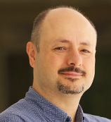

Keynote
Keynote 1: The Art of Open Source, Reimagine Intelligent Vehicles
Founder and CEO / CTO of TIER IV

Abstract: Autonomous driving technologies are becoming the future of automotive and mobility applications, yet not many of us find their norm and common sense. This talk presents Autoware, an open-source software project that provides full-stack capabilities of autonomous driving, alongside the lessons learned on building intelligent vehicles.
Bio:
Shinpei is the founder and CEO / CTO of TIER IV, and a co-founder and chairman of the Autoware Foundation. He also works as a specially appointed professor for the Graduate School of Information Science and Technology at the University of Tokyo. An internationally renowned expert in computer science, and a pioneer in the evolution of open-source software for autonomous driving technology. Shinpei was an associate professor at the Graduate School of Information Science, Nagoya University, from 2012 to 2016, where his team created the world's first open-source software for autonomous driving technology, Autoware. He was also a postdoctoral scholar at Keio University, the University of Tokyo, Carnegie Mellon University, and University of California. His expertise includes computer architectures and operating systems for embedded and real-time systems as well as parallel and distributed systems.
Keynote 2: Automated Public transportation is not just self driving
CEO & Cofounder ADASTEC Corp.

Bio:
Dr. Ali U. Peker is an experienced Chief Executive Officer with a demonstrated history of working in the information technology and telecommunications industry. He is skilled in Location Based Services, Mobile Applications, IoT and autonomous vehicles. He has 20+ years of experience in IoT, mobile and LBS. His Ph.D. thesis is titled “Digital map and GNSS fusion to enhance localization for intelligent vehicle applications”. His research interests are focused on location based technologies, artificial intelligence, and autonomous vehicles. He is also an Asst. Prof. in the Computer Engineering Department of the Okan University
Panel: Autonomous Driving: State-of-the-art and Challenges
Moderator
Director of The CAR Lab
Dr. Shi is a Professor and Chair of the Department of Computer and Information Sciences at the University of Delaware (UD), where he leads the Connected and Autonomous Research (CAR) Laboratory. Dr. Shi is an internationally renowned expert in edge computing, autonomous driving and connected health. His pioneer paper entitled “Edge Computing: Vision and Challenges” has been cited more than 7000 times. Dr. Shi is the chair of IEEE Computer Society Special Technology Community on Autonomous Driving Technologies (ADT), the (Honorary) Director of eCAT NSF IUCRC Center and the Strategic Planning Committee member of the Autoware Foundation. He is an IEEE Fellow and an ACM Distinguished Scientist.
Panelists
Industry Chief Technology Officer Edge & Intelligent Connected Vehicle, Dell Technologies

Jeff White is the Industry CTO of Dell Technologies for the Automotive sector, specializing in Connected and Autonomous Vehicles and leading the company's Edge Technology strategy. With a focus on the development of Dell's Intelligent Connected Vehicle platform, Jeff chairs the Dell Automotive Design Authority Council and drives the evolution of a comprehensive Dell Edge platform. His vast experience includes pivotal roles at early-stage AI and process automation providers, Elefante Group, Hewlett Packard Enterprise, Ericsson, and Alcatel-Lucent. Jeff's early leadership stints saw him at the helm of National Transport Infrastructure Engineering at Cingular Wireless (now AT&T) and Broadband Internet Operations at BellSouth (now AT&T). An alumnus of Southern Polytechnic University with a B.S. in Electrical Engineering, he served as Chairman of the Tech Titans Technology Association in North Texas and contributed to the Texas Emerging Technology fund committee under Governor Rick Perry.
Founder and CEO / CTO of TIER IV
Shinpei is the founder and CEO / CTO of TIER IV, and a co-founder and chairman of the Autoware Foundation. He also works as a specially appointed professor for the Graduate School of Information Science and Technology at the University of Tokyo. An internationally renowned expert in computer science, and a pioneer in the evolution of open-source software for autonomous driving technology. Shinpei was an associate professor at the Graduate School of Information Science, Nagoya University, from 2012 to 2016, where his team created the world's first open-source software for autonomous driving technology, Autoware. He was also a postdoctoral scholar at Keio University, the University of Tokyo, Carnegie Mellon University, and University of California. His expertise includes computer architectures and operating systems for embedded and real-time systems as well as parallel and distributed systems.
Co-Founder and CEO of Mozee

As the Co-Founder and CEO of Mozee, Shawn Taikratoke is revolutionizing the transportation landscape through the innovative use of autonomous, electric, multi-passenger vehicles. With a deep-seated passion for computer engineering and a career that spans several prestigious roles, including time at Fossil, as a Principal Software Engineer in the Department of Defense focusing on UAVs (Unmanned Aerial Vehicles), and impactful work at Apple, Shawn brings a wealth of experience and insight to the forefront of autonomous mobility solutions. Under Shawn's leadership, Mozee stands as a testament to the potential of driverless technology to make transportation accessible for all, effectively closing the first-mile, last-mile gap in urban and semi-urban settings. Each Mozee deployment is more than just a step towards universal mobility; it's a stride towards harnessing real-world data and insights essential for developing cutting-edge, vehicle-agnostic solutions.
Product Management Director at ADASTEC Corp
Cemre KAVVASOGLU is the Product Management Director, North America at ADASTEC Corp. Mr. Cemre Kavvasoglu has 5+ years of experience in autonomous vehicles in the private sector as well as working with autonomous technologies during his undergraduate and graduate education. Prior to joining ADASTEC, Mr. Kavvasoglu worked as an Autonomous Driving Development Engineer at AVL. After that, he worked as Autonomous Driving Software Engineer and Technical Product Manager at ADASTEC in Istanbul, where he managed several EU deployments. In 2022, Kavvasoglu was promoted to Product Management Director, North America, where he is responsible for managing deployments and OEM relations in North America, such as the one at Michigan State University. Mr. Kavvasoglu has a Bachelor of Science in Mechatronics Engineering and a Master of Science in Power Electronics and Clean Energy Systems, and he is currently pursuing his Ph.D. in Mechatronics Engineering.